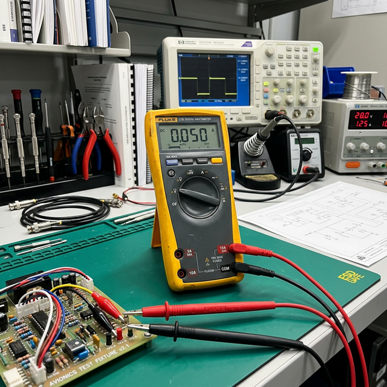

DMM basics
modes & connections
Module Objectives
- Identify the correct circuit connection methodology (series vs. parallel) for measuring voltage, current, and resistance.
- State the necessary power state (ON or OFF) for each measurement type.
- Interpret an "OL" reading during a continuity test.
Why Does This Matter?

A technician connects a multimeter directly across a landing light bulb to measure how much current it draws. The meter's internal fuse blows instantly with an audible pop. Why? The technician connected an ammeter in *parallel*. An ammeter has near-zero internal resistance. By placing it in parallel, the technician created a dead short circuit directly through the meter. Getting the connection wrong destroys fuses, damages multimeters, and can result in severe arc flashes.
What You Need To Know
A Digital Multimeter (DMM) measures three primary electrical quantities: voltage (V), current (A), and resistance (Ω). Because the meter behaves differently in each mode, the physical connection to the circuit must change.
Voltage Measurement (V)
- Connection: Connect the meter in parallel (across the component). You do not need to disconnect any wires.
- Power State: Circuit must be powered ON.
- Probe setup: Red probe to the V/Ω jack, black to COM.
- *Physics:* In Voltage mode, the meter has extremely HIGH internal resistance (megohms) so that it sips almost zero current, preventing the meter from "loading" or affecting the circuit being measured.
Current Measurement (A)
- Connection: Connect the meter in series. You MUST break the circuit and insert the meter so that all current flows *through* the meter.
- Power State: Circuit must be powered ON to flow current.
- Probe setup: Red probe MUST move to the dedicated 'A' or 'mA' jack, black to COM.
- *Physics:* In Current mode, the meter has extremely LOW internal resistance so it does not restrict the circuit current. NEVER connect an ammeter in parallel.
Resistance Measurement (Ω)
- Connection: Connect the meter in parallel across the isolated component.
- Power State: Circuit power MUST be OFF.
- *Physics:* The meter provides its own small, internal battery voltage to push a tiny test current through the component. If applied to a live circuit, the external voltage will fight the meter and damage the ohmmeter circuitry.
Continuity Test and "OL"
A continuity test uses the resistance mode (often with an audible beep) to verify whether a solid conductive path exists.
- Near-zero resistance (Beep): Path is complete (good wire, closed switch).
- OL (Over Limit): Path is broken (cut wire, open fuse, disconnected connector).
"OL" literally means the measured resistance exceeds the meter's maximum screen range. For avionics wiring, OL almost always proves an open circuit.
System Visualization
graph TD
A[Multimeter Modes] --> B(Voltage Check)
A --> C(Current Check)
A --> D(Resistance / Continuity)
B --> E[Meter setup: V Jack]
E --> F[Circuit: Power ON]
F --> G[Connection: IN PARALLEL]
C --> H[Meter setup: A Jack]
H --> I[Circuit: Power ON]
I --> J[Connection: IN SERIES break circuit]
D --> K[Meter setup: V/Ω Jack]
K --> L[Circuit: Power OFF]
L --> M[Connection: IN PARALLEL across isolated load]
style G fill:#1e40af,stroke:#1e3a8a,stroke-width:2px,color:#fff
style J fill:#991b1b,stroke:#7f1d1d,stroke-width:2px,color:#fff
style M fill:#166534,stroke:#14532d,stroke-width:2px,color:#fff
On The Job
Before touching probes to a circuit, adhere to this absolute three-second mental checklist: "What am I measuring? Are my leads in the right jacks for that? Is the power state correct for that?" If you are checking resistance, verify the master switch is off. If you are checking current, verify you have broken the circuit to insert the meter.
Reference Terms
Voltage measurement — multimeter connection
To measure voltage, connect the multimeter IN PARALLEL across the component (red probe to positive side, black to negative). Circuit must be POWERED ON. The meter's high internal resistance prevents it from affecting circuit operation.
Multimeter OL Indication
'OL' (over limit or overload) on a multimeter set to ohms means the resistance is greater than the meter's maximum measurable range on the selected scale — typically indicating an open circuit (broken wire, open fuse, or disconnected path) or a very high resistance.
Resistance measurement procedure
Before measuring resistance: (1) Turn circuit power OFF. (2) Discharge any capacitors in the circuit. Reason: applied voltage will damage the meter's ohmmeter circuit and give false readings. The DMM supplies its own small test current for resistance measurement.
Continuity Test
A continuity test uses a multimeter (typically in the ohms or continuity beep mode) to measure resistance between two ends of a conductor; near-zero resistance confirms a complete circuit, while 'OL' or infinite resistance confirms an open/broken wire.
Multimeter
A multimeter (digital or analog) is a single instrument that measures multiple electrical quantities: voltage (volts AC and DC), current (amps AC and DC), and resistance (ohms) — replacing separate voltmeter, ammeter, and ohmmeter instruments.
Current measurement — ammeter connection
To measure current, connect the ammeter IN SERIES — break the circuit and insert the meter so all current flows through it. The ammeter has very low internal resistance so it doesn't significantly affect circuit operation. Never connect an ammeter in parallel — it will short-circuit the supply.
In Parallel
Connecting a meter *across* a component without breaking the circuit. Required for voltage.
In Series
Connecting a meter *inline* by breaking the circuit. Required for current.
OL (Over Limit)
Meter screen indication that resistance exceeds the selected range; effectively means an open circuit.
Assessment Check
Voltage is measured in parallel (power ON), current is measured in series (power ON), resistance is measured with power OFF — and an ammeter connected in parallel creates a short circuit. --- ---